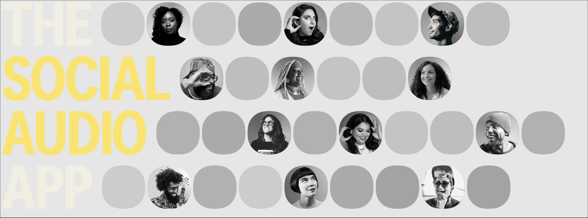

Clubhouse is a social audio app for iOS and Android where users can communicate in audio chat rooms that accommodate groups of thousands of people.Other social audio apps like Discord Stage Channels, Facebook Live Audio Rooms, Reddit Talk, Slack Huddles, Spotify Greenroom, Telegram Voice Chats, and Twitter Spaces all directly compete with Clubhouse.
